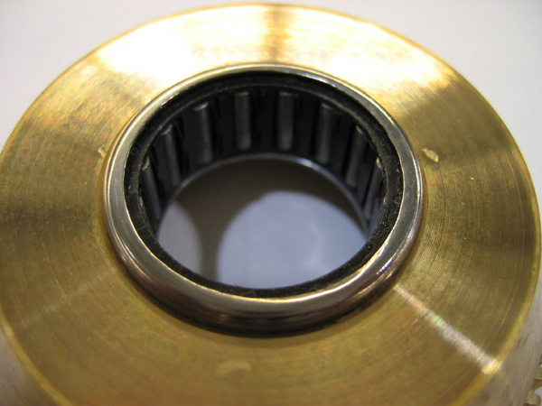
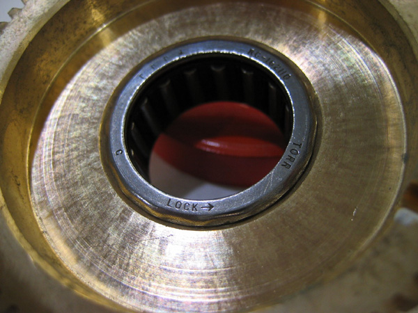

Operating Documentation
Direction 5193891-800, Rev# 5
LightSpeed 5.X Pro16 Limited Access Service Information (Adv)
Operating Documentation |
| Required Persons | Preliminary Reqs | Procedure | Finalization |
|---|---|---|---|
| 1 | Timing Not Applicable | 30 mins |
Procedure Effectivity:
| Last Revised: | October 28, 2003 |
Since the clutch is adjusted for slip force, it should be marked before disassembly. This allows the re-assembly process to get back to about the same slip force. Ideally, a force gage should be used per the service procedure for adjusting the clutch, so that the 40 lbf limit, for cradle drive force into the gantry, can be correctly set.
Make a mark across the NUT and the end of the threaded shaft of the HUB (Item 2 Illustration 1). This can done from the left side of the cradle drive.
Illustration 1: Cradle Slip Clutch Assembly

Loose the two set screws locking the NUT to the HUB shaft.
Loosen the NUT and remove.
Remove the SPRING, PLATE and FRICTION DISC so that the bronze GEAR (item 4) can be viewed.
First Check: Installed on the I.D of the bronze GEAR, the roller-clutch (item 3) will be visible as a silver ring. Inspect this ring to insure that the word “LOCK -->” does NOT appear. See Illustration 2
Illustration 2: Gear Outside

Second Check: Remove the GEAR from the HUB shaft, and looking on the inside surface of the GEAR, see that the word “LOCK -->” DOES appear on the inside roller-clutch surface, per the note on the assembly drawing. See Illustration 3.
Illustration 3: Gear Inside

Third Check: Re-install the GEAR onto the HUB shaft, and insure that the GEAR rotates freely in the direction specified on the assembly drawing. The GEAR should NOT rotate when rotated the opposite direction.
Re-assemble, and adjust clutch slip force.
Perform Cradle Clutch Adjustment.